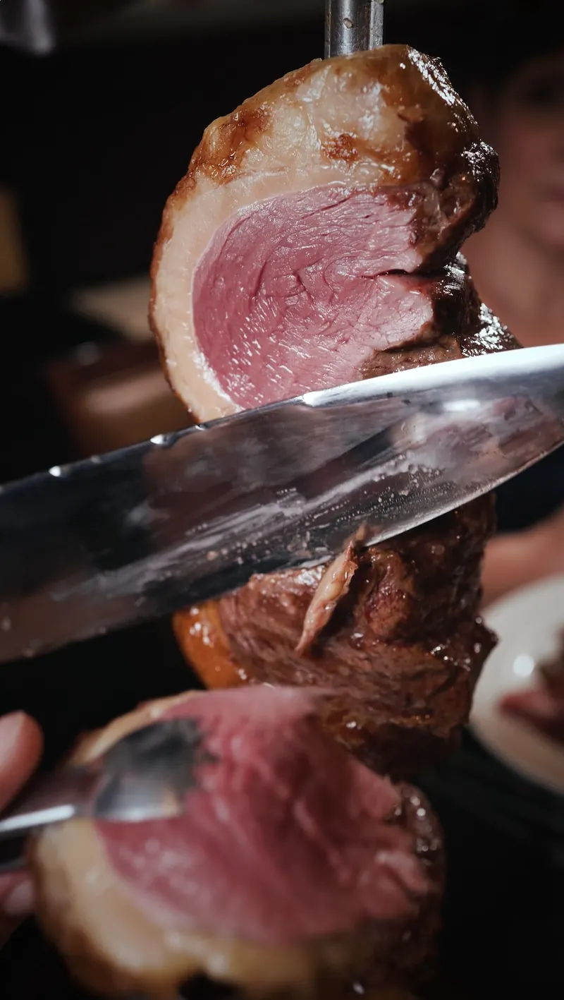
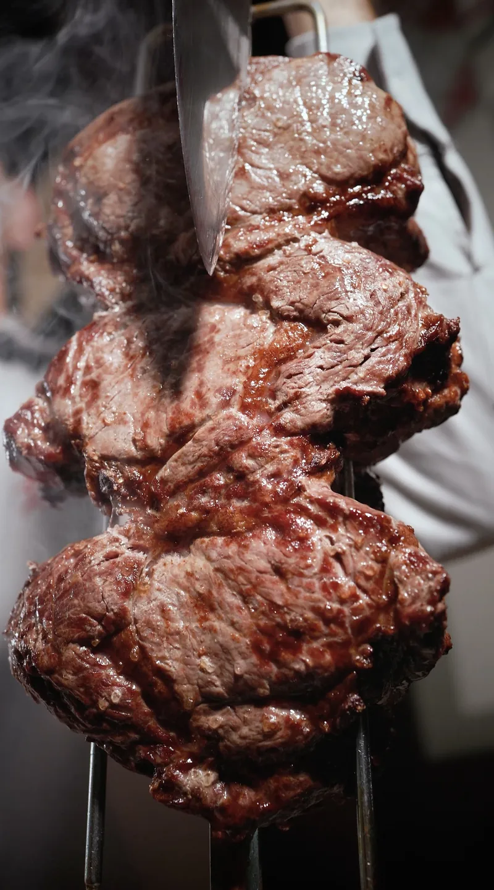
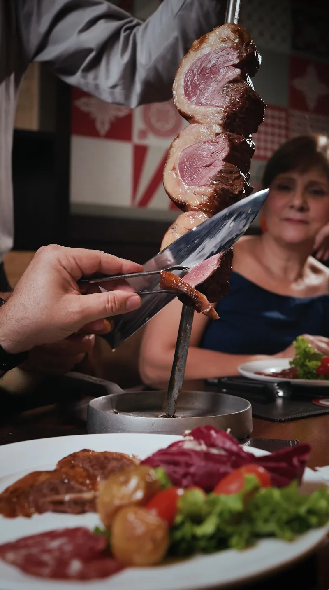
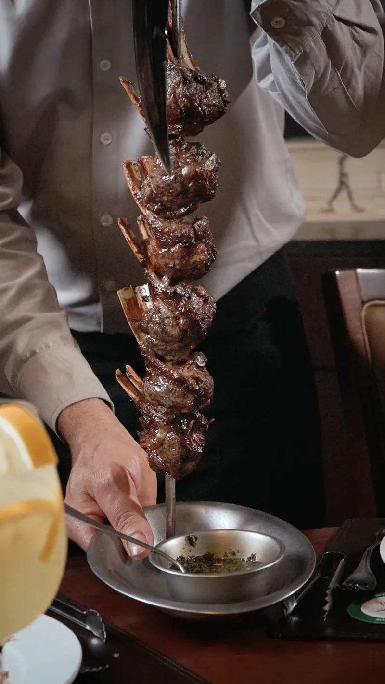
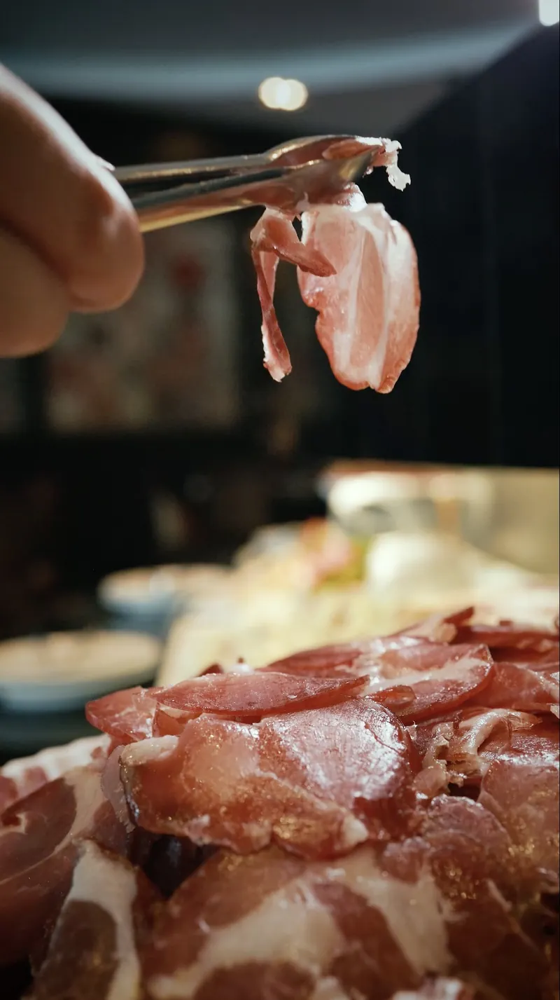
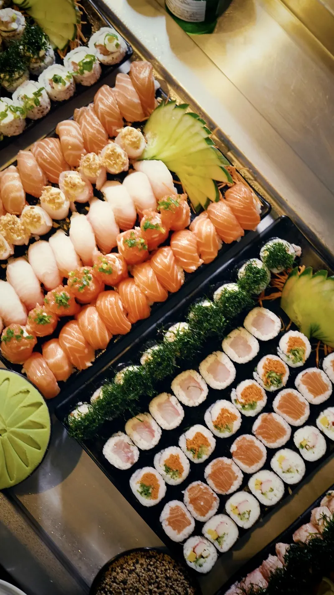
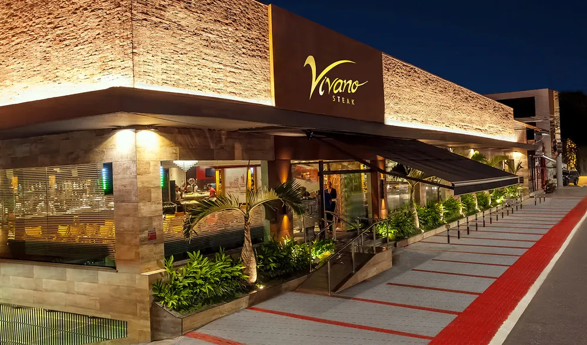

Rodízio · Buffet · Desde 1997
Avenida Goiás, 1135Conheça a Vivano

01 · A experiência
O cuidado começa
na brasa.
O corte, o ponto, o serviço. Na Vivano, cada etapa faz parte do prazer de sentar à mesa e aproveitar o encontro.

Hoje, no espeto.

Servido à mesa.

Da brasa à mesa.
O produto em primeiro plano. A hospitalidade em cada detalhe.
Ver cardápio02 · Buffet e entradas
Outros sabores.
O mesmo cuidado.
Entre uma conversa e outra, descubra as entradas e os sabores do nosso buffet. Da delicadeza do parma à seleção de sushis.
Explore o cardápio


03 · A casa
Desde 1997.
Feita para receber.
Em São Caetano do Sul, a Vivano faz parte de encontros que merecem tempo à mesa. Do almoço em família à celebração especial.
Para eventos e confraternizações, converse com a equipe sobre o nosso espaço reservado.
Planeje seu encontroOnde estamos
Avenida Goiás, 1135
São Caetano do Sul · SPTraçar rota
São Caetano do Sul · SPTraçar rota
Reservas e informações
(11) 4223-5555
Consulte horários, disponibilidade e reservas com a equipe.